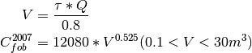

MixTank¶
-
class
biosteam.units.MixTank(ID='', outs=(), ins=None)[source]¶ Create a mixing tank with volume based on residence time.

References
[1] I.K. Kookos, Preliminary Chemical Process Synthesis and Design, Tziolas Publishing, Thessalonika, Greece, 2008 (book in Greek).-
ID¶ Unique Identification (str). If set as ‘’, it will choose a default ID.
-
diagram(radius=0, file=None, format='svg')¶ Display a Graphviz diagram of the unit and all neighboring units within given radius.
Parameters
radius: [int] Maxium number streams between neighbors.
- file: Must be one of the following:
- [str] File name to save diagram.
- [None] Display diagram in console.
format: Format of file.
-
purchase_cost¶ Total purchase cost (USD).
-
reset(**kwargs)¶ Reset unit with new key word arguments.
-
results(with_units=True)¶ Return key results from simulation as a DataFrame if with_units is True or as a Series otherwise.
-
show(T=None, P=None, flow=None, fraction=None)¶ Prints information on unit.
-
simulate()¶ Run rigourous simulation and determine all design requirements.
-
tau¶ Residence time (hr).
-
utility_cost¶ Total utility cost (USD/hr).
-
working_volume_fraction¶ Fraction of working volume.
-